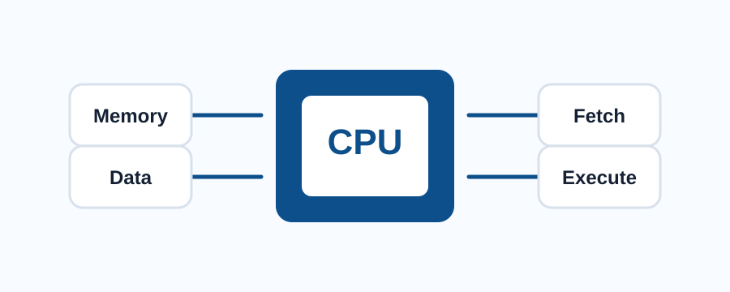

GCSE Computer Science
CPU workbook
Use this page to revise the purpose of the CPU, its main components and the fetch-decode-execute cycle.

Part 1: What the CPU does
The CPU is the main processor in a computer. It runs instructions and controls how data moves around the system. When a program runs, the CPU repeatedly fetches instructions, decodes what they mean and executes them.
Activity
Write one sentence explaining why the CPU is important when a program is running.
Part 2: CPU components
The Control Unit coordinates the movement of instructions and data. The Arithmetic Logic Unit performs calculations and logical comparisons. Registers are small, fast storage locations inside the CPU.
Activity
Explain the difference between the Control Unit and the Arithmetic Logic Unit.
Part 3: Fetch-decode-execute cycle
The fetch-decode-execute cycle is the repeated process used by the CPU to run instructions. The CPU fetches an instruction from memory, decodes the instruction, then executes the required operation.
Challenge
Explain why this cycle needs to happen many times while a program runs.